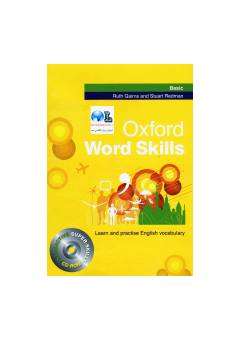

OOxford Word Skills Basic — ingliz tilini o'rganuvchilar uchun mo'ljallangan lug'at va so'z boyligini rivojlantirish kitobi. U boshlang'ich darajadagi o'quvchilarga yangi so'zlarni o'rganish va mustahkamlash imkonini beradi. Kitob mashqlar va vizual materiallar orqali so'z boyligini samarali o'zlashtirishga yordam beradi.